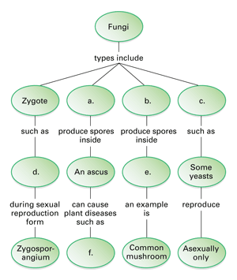
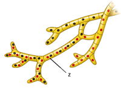

Reviewing Concepts
Multiple Choice
Choose the letter of the best answer.
1. The fine threads that make up the bodies of most fungi are called
a. spores.
b. hyphae.
c. cell walls.
d. sporangia.
2. The main function of a mycelium is to
a. maximize contact with a food source.
b. produce spores.
c. flavor cheese.
d. make bread rise.
3. The portion of a fungus that you see above the ground is usually the
a. mycelium.
b. reproductive structure.
c. mycorrhizae.
d. hyphae.
4. A dikaryotic fungal cell has two
a. spores.
b. nuclei.
c. hyphae.
d. fruiting bodies.
5. A fungus that has an asexual life cycle and no known sexual phase is called
a. a zygote fungus.
b. a sac fungus.
c. an imperfect fungus.
d. a club fungus.
6. The two symbiotic organisms found in a lichen are
a. a fungus and an animal.
b. a fungus and a mold.
c. a fungus and a plant.
d. a fungus and an alga.
7. Which of the following is not caused by a parasitic fungus?
a. ringworm
b. rye ergot
c. Dutch elm disease
d. formation of mychorrizae
Short Answer
8. What is a mycelium? Describe its function.
9. Describe how fungi digest food and absorb nutrients.
10. State the function of fungal spores.
11. Compare and contrast the sexual reproductive structures of sac and club fungi.
12. Explain what a dikaryotic hypha is and how it is formed.
13. Explain how one type of fungus is used to make bread.
14. Explain the symbiotic relationship that exists between the organisms that make up lichen.
15. What are mycorrhizae? Describe their function.
16. Explain the role fungi play in chemical cycling.
Visualizing Concepts
17. On a separate sheet of paper copy the concept map below and fill in the blank spaces.

Applying Concepts
Analyzing Information
18. Analyzing Diagrams The drawing below represents one stage in the life cycle of a club fungus.
a. What type of hypha is illustrated by structure "z"?
b. Describe what must happen in order for this structure to form.
c. Are the nuclei in the cells haploid or diploid?
d. Explain how this stage of the club fungus's life cycle introduces genetic variation.

19. Analyzing Diagrams The diagram shows a cross section of a fungus.
a. What is the name of structure "x"? Describe its function.
b. What is the name of structure "y"? Describe its function.
c. What information would you need to classify this fungus into its correct group?

Critical Thinking
20. Developing Hypotheses Many people are allergic to molds and mold spores. Often, these allergies flair up even if the person is outdoors in fresh air, where no mold growth can be seen. Explain why the allergic reaction can still take place.
21. Relating Cause and Effect You observe mold and bacteria growing together in the same petri dish. After a few days the bacteria growth covers the entire surface and the mold seems no longer to be growing. What conclusions can you draw about the mold and its secretion of antibiotic?
22. Comparing and Contrasting Describe one example of a mutually beneficial symbiotic relationsip between a fungus and another organism. Give an example of a parasitic fungal relationship. Describe the differences in the two relationships.
23. Relating Cause and Effect In which rooms of a house is the growth of mold most likely to occur? Explain.
24. What's Wrong With These Statements?
Briefly explain why each statement is inaccurate or misleading.
a. All fungi reproduce both asexually and sexually.
b. All fungi produce spores in zygosporangia.
c. All fungi are harmful.
d. The "mushroom" is the entire fungus organism.
Performance Assessment
Design an Experiment Design an experiment that would test the hypothesis that the fungus called bread mold (Rhizopus stolonifer) is spread by airborne spores.